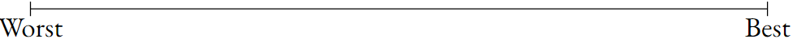
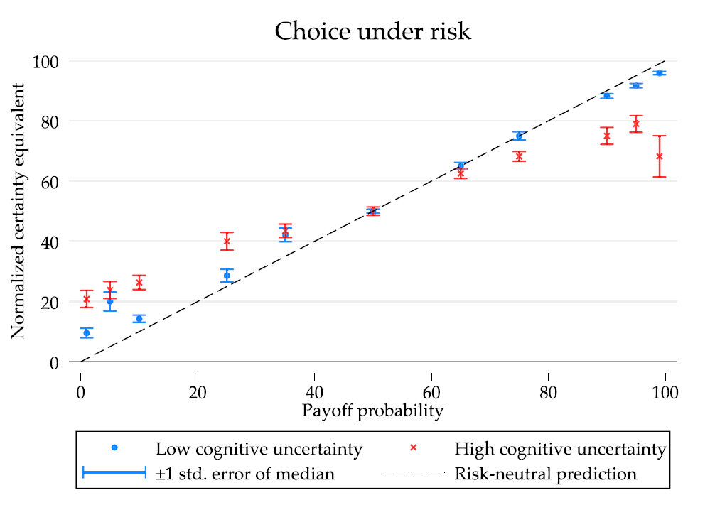

Expected Utility & Its Critiques
Expected Utility Theory, Subjective EUT, Probability Weighting
Decisions under Risk and Uncertainty
- People take many decisions daily where they do not know exactly what will happen.
- Think about choosing when to leave house to get to this lecture.
- Will the bus be on time?
- How much does it matter if I miss the first 5 minutes of class…?
- This is highly a highly complex problem.
- Yet we solve hundrets of them daily.
Terminology
- In economics, we distinguish between decisions under risk and decisions under uncertainty.
- Risk has known probabilities, it is a known unknown:
- The probability of a die roll of four.
- Winning at roulette.
- You do not know uncertain probabilities, they are an unknown unknown.
- Whether stocks will go up or down.
- The climate impact of your lunch.
Plan
- Two central economic theories exist to describe how individuals behave under risk and uncertainty.
- Risk: Expected Utility Theory
- Uncertainty: Subjective Expected Utility Theory
- They are central to economic modeling.
- We will learn about them now.
- Then we will learn about behavioral economic critiques.
Expected Utility Theory (EUT)
- An agent chooses between lotteries \(p\,\in\,\mathcal{P}(\mathcal{Z})\) that map outcomes \(z\in\mathcal{Z}\) to probabilities.
- Example of a lottery: Flip a coin. If heads, 5€. If tails, 0€.
- We will denote this lottery as \((5, 0.5; 0, 0.5)\).
- The agent has preferences \(\succeq\) over lotteries.
- Example of a preference: \((2, 1)\succeq (5, 0.5; 0, 0.5)\).
- The preferences follow certain axioms (next slide).
Axioms of EUT
Rationality. — the usual completeness & transitivity.
Independence. If \(p \succ q\) then for any lottery \(r\) and \(\alpha\in(0,1]\) \[\alpha p+(1-\alpha)r \;\succ\; \alpha q+(1-\alpha)r.\]
Axioms of EUT
Independence. If \(p \succ q\) then for any lottery \(r\) and \(\alpha\in(0,1]\) \[\alpha p+(1-\alpha)r \;\succ\; \alpha q+(1-\alpha)r.\]
- \(\alpha p+(1-\alpha)r\) is a compound lottery.
- E.g., \(p\) is lottery “win 5€ if heads” and \(r\) is lottery “win 10€ if die is odd”.
- \(\alpha\) is a probability, e.g., 40%.
Axioms of EUT
Independence. If \(p \succ q\) then for any lottery \(r\) and \(\alpha\in(0,1]\) \[\alpha p+(1-\alpha)r \;\succ\; \alpha q+(1-\alpha)r.\]
- E.g., p is lottery “win 5€ if heads” and r is lottery “win 10€ if die is odd”.
- \(\alpha\) is a probability, e.g., 40%.
- Then, this reads as “With 40%, toss coin and win 5€ if heads. With 60%, roll die and win 10€ if odd.”
Axioms of EUT
Independence. If \(p \succ q\) then for any lottery \(r\) and \(\alpha\in(0,1]\) \[\alpha p+(1-\alpha)r \;\succ\; \alpha q+(1-\alpha)r.\]
- Independence basically says that the agent focuses on the things that are different when comparing lotteries.
- Both lotteries contain \((1-\alpha)r\).
- Therefore, decide only based on comparing \(p\) and \(q\) because they are different.
Axioms of EUT
Continuity. If \(p\succeq q\succeq r\) and \(p\succ r\) then there is an \(\alpha\in[0,1]\) with \[q\;\sim\; \alpha p + (1-\alpha)r.\]
- The agent takes their most and least preferred lottery and can mix them such that agent is indifferent between the mix and any other lottery.
Axioms of EUT
Continuity. If \(p\succeq q\succeq r\) and \(p\succ r\) then there is an \(\alpha\in[0,1]\) with \[q\;\sim\; \alpha p + (1-\alpha)r.\]
- Sounds intuitive, but consider, e.g., your least preferred lottery being “death with probability 1”. Would you mix that with anything?
Expected Utility Representation
Proposition. If \(\succeq\) satisfies rationality, independence, and continuity, then there exists a utility function \(u:\mathcal{Z}\to\mathbb{R}\) such that \[ p\succeq q \quad\Longleftrightarrow\quad \sum_{z\in\mathcal{Z}} p(z)\,u(z)\;\ge\; \sum_{z\in\mathcal{Z}} q(z)\,u(z). \]
- In the EU representation, utility of an outcome scales linearly in its probability.
- E.g., The EU of lottery \((5, \frac{1}{6}; 0, \frac{5}{6})\) is \(\frac{1}{6} u(5) + \frac{5}{6} u(0).\)
Proof Sketch: EU Representation
- That EU is linear in probability is the consequence of the independence and continuity axioms.
- Independence implies the following lemma:
Lemma. If \(p\succ q\) and \(0\leq \alpha < \beta \leq 1\), then \(\beta p + (1-\beta)q\succ \alpha p + (1-\alpha)q\).
Proof on board.
Proof Sketch: EU Representation
- Now take the worst possible outcome and the best possible outcome and put them on a utility scale (e.g., \(U(\text{Worst}) = 0\), \(U(\text{best}) = 1\)).

Proof Sketch: EU Representation
- Now take the worst possible outcome and the best possible outcome and put them on a utility scale (e.g., \(U(\text{Worst}) = 0\), \(U(\text{best}) = 1\)).
- By continuity there is a probability \(f(p)\) such that \[ p \sim f(p)\text{Best} + (1-f(p))\text{Worst}. \]
Proof Sketch: EU Representation
- Now take the worst possible outcome and the best possible outcome and put them on a utility scale (e.g., \(U(\text{Worst}) = 0\), \(U(\text{best}) = 1\)).
- By continuity there is a probability \(f(p)\) such that \[ p \sim f(p)\text{Best} + (1-f(p))\text{Worst}. \]
- By the lemma, if \(p\succ q\), then \(f(p) > f(q)\).
Proof Sketch: EU Representation
- By continuity there is a probability \(f(p)\) such that \[ p \sim f(p)\text{Best} + (1-f(p))\text{Worst}. \]
- By the lemma, if \(p\succ q\), then \(f(p) > f(q)\).
- The full proof shows that \(f(p)\) is affine, which implies that EU is linear in probability (not shown here).
Subjective Expected Utility (SEU)
- SEU extends EU to situations with uncertainty.
- States of the world \(\omega\in\Omega\)
- E.g., \(\Omega = \{\text{rain tomorrow, sun tomorrow}\}\).
- Acts \(a:\Omega\to\Delta\mathcal{Z}\).
- E.g., an act might be “take an umbrella”.
- This ensures the outcome “stay dry” in both states of the world.
- Acts take on the role of lotteries in EU.
- The agent has preferences over acts.
Subjective Expected Utility (SEU)
- Back to acts. These are functions \(a:\Omega\to\Delta\mathcal{Z}\).
- \(a\) is a function from the state of the world (that the agent is uncertain about) to a probability distribution over oucomes.
- E.g., if my umbrella only works half of the time, then I am not sure whether I will stay dry if I take an umbrella and it rains.
- We write \(a(\omega)(z)\) to denote “The probability of outcome \(z\) under \(a\) if the state of the world is \(\omega\)”.
SEU tells us that:
- If the agent has preferences over acts,
- and these preferences conform to rationality, independence, and continuity,
- (and a number of technical axioms that we do not want to learn in this course),
- then there is a utiliy representation that looks like EU.
SEU Representation
Proposition. If \(\succeq\) satisfies rationality, independence, continuity plus a number of additional axioms that aren’t that interesting then there exists \(u\) and a probability measure \(\mu \in\Delta(\Omega)\) such that \[ a\succeq b \quad\Longleftrightarrow\quad \] \[ \sum_{\omega\in\Omega} \mu(\omega)\, \sum_{z\in\mathcal{Z}} a(\omega)(z)\,u(z) \;\ge\; \sum_{\omega\in\Omega} \mu(\omega)\, \sum_{z\in\mathcal{Z}} b(\omega)(z)\,u(z). \]
SEU Implications
- Risk: EU tells us that rationality, independence & continuity imply a utility function \(u\).
- Uncertainty: SEU tells us that rationality, independence & continuity imply a utility function \(u\) and a subjective belief \(\mu\) that is a probability measure on \(\Omega\).
- That is, even under uncertainty, agent acts as if they can quantify uncertainty according to some function \(\mu(\omega)\).
- Agent has a precise estimate of the probability of “rain tomorrow” (\(\mu(\omega=\text{rain tomorrow})\)), and of all other possible events
SEU Implications
- Uncertainty: SEU tells us that rationality, independence & continuity imply a utility function \(u\) and a subjective belief \(\mu\) that is a probability measure on \(\Omega\).
- That is, even under uncertainty, agents act as if they can quantify uncertainty according to some function \(\mu(\omega)\).
- They have a precise estimate of the probability of “rain tomorrow” (\(\mu(\omega=\text{rain tomorrow})\)), and of all other possible events
- The subjective belief follows the laws of probability (e.g., \(\sum_{\omega\in\Omega}\mu(\omega) = 1\)).
SEU Legacy
- SEU representation is widely celebrated as THE achievement of classical decision theory.
- So many important (and convenient) implications:
- We can model behavior using utility even under uncertainty.
- Utility is linear in (subjective) probability.
- Individual beliefs follow the laws of probability; they are accurate on average, react well to new information, etc. (more on this later this semester).
A plan for attack
SEU and EU are also important for behavioral economics, because they indicate how to challenge the classical theory.
- We can ask:
- Is utility really linear in probability?
- Do people adhere to continuity and independence?
- Do beliefs follow the laws of probability?
A plan for attack
SEU and EU are also important for behavioral economics, because they indicate how to challenge the classical theory.
- We can ask:
- Is utility really linear in probability?
- Do people adhere to continuity and independence?
- Do beliefs follow the laws of probability?
This lecture
A plan for attack
SEU and EU are also important for behavioral economics, because they indicate how to challenge the classical theory.
- We can ask:
- Is utility really linear in probability?
- Do people adhere to continuity and independence?
- Do beliefs follow the laws of probability?
This lecture
Later this semester
Risk preferences in EU and SEU
- EU and SEU are linear in probability.
- If we additionally assume that \(u\) is linear in money, we obtain seeming paradoxes.
St. Petersburg paradox. Toss a coin sequentially until you toss tails. Denote the number tosses before tossing tails by \(k\). You will receive \(2^{k-1}\) gold coins. How much would you pay for this lottery?
St. Petersburg Paradox
St. Petersburg paradox. Toss a coin sequentially until you toss tails. Denote the number tosses before tossing tails by \(k\). You will receive \(2^{k-1}\) gold coins. How much would you pay for this lottery?
This lottery has an expected value of \[\small \sum_{k=1}^{\infty}\left(\frac{1}{2}\right)^k 2^{k-1} = \frac{1}{2}\times 1 + \frac{1}{4}\times 2 + \frac{1}{8}\times 4 + \ldots = \frac{1}{2} + \frac{1}{2} + \ldots = \infty. \]
Clearly, this is not a good estimate of the value of this lottery.
St. Petersburg Paradox: History
1713: Bernoulli writes a letter explaining the gamble
“Dear friend, consider this…” — Nicolaus Bernoulli in 1713 (paraphrasing)
St. Petersburg Paradox: History
1713: Montmort replies
“It’s really easy to calculate the value, just use the EV calculation techniques that your uncle invented…” — Pierre Montmort in 1713 (paraphrasing)

St. Petersburg Paradox: History
1713: Bernoulli answers
“Yeah, I know how to solve this. But you should have tried yourself. The solution doesn’t make any sense.” — Nicolaus Bernoulli in 1713 (paraphrasing)
St. Petersburg Paradox: History
1738: Daniel Bernoulli resolves the paradox
“Just assume \(u'' < 0\).” — Daniel Bernoulli in 1738 (paraphrasing)
Daniel’s solution
- Assuming that the utility function is concave in money, we can resolve the paradox.
- E.g., assume that \(u(z) = \ln(z)\): \[\small \sum_{k=1}^{\infty}\left(\frac{1}{2}\right)^k ln(2^{k-1}) = \sum_{k=1}^{\infty}\left(\frac{1}{2}\right)^k (k-1)ln(2) = ln(2)\sum_{k=1}^{\infty}\frac{k-1}{2^k}. \]
- Focus on the geometrical series: \[\small \sum_{k=1}^{\infty}\frac{k-1}{2^k} = \sum_{k=1}^{\infty}\frac{k}{2^k} - \sum_{k=1}^{\infty}\frac{1}{2^k}. \]
Daniel’s solution
- Focus on the geometrical series: \[\small \sum_{k=1}^{\infty}\frac{k-1}{2^k} = \sum_{k=1}^{\infty}\frac{k}{2^k} - \sum_{k=1}^{\infty}\frac{1}{2^k} = a - b \]
- The term \(b\) is: \[\small b = \sum_{k=1}^{\infty}\frac{1}{2^k} = \frac{1}{2}\sum_{k=1}^{\infty}\frac{1}{2^{k-1}} = \frac{1}{2}\left(1 + \frac{1}{2} + \frac{1}{4} + \ldots \right) \\ = \frac{1}{2}\left(1 + b\right) \Rightarrow b = \frac{1}{2}(1+b) \Rightarrow b = 1 \]
Daniel’s solution
- Focus on the geometrical series: \[\small \sum_{k=1}^{\infty}\frac{k-1}{2^k} = \sum_{k=1}^{\infty}\frac{k}{2^k} - \sum_{k=1}^{\infty}\frac{1}{2^k} = a - b \]
- The term \(a\) is: \[\small a = \sum_{k=1}^{\infty}\frac{k}{2^k} = \frac{1}{2}\sum_{k=1}^{\infty}\frac{k}{2^{k-1}} = \frac{1}{2}\left(1 + 2\times \frac{1}{2} + 3 \times \frac{1}{4} + \ldots \right) \\ = \frac{1}{2}\left(1 + \frac{1}{2} + 2\times\frac{1}{4} + 3\times \frac{1}{8} + \ldots + \frac{1}{2} + \frac{1}{4} + \frac{1}{8} + \ldots\right) \]
Daniel’s solution
- Focus on the geometrical series: \[\small \sum_{k=1}^{\infty}\frac{k-1}{2^k} = \sum_{k=1}^{\infty}\frac{k}{2^k} - \sum_{k=1}^{\infty}\frac{1}{2^k} = a - b \]
- The term \(a\) is: \[\small a = \frac{1}{2}\left(1 + a + b\right) \Rightarrow a = \frac{1}{2}(2 + a) \Rightarrow a = 2. \]
- So the overall lottery value becomes: \[\small \ln(2)\times(a - b) = \ln(2). \]
Utility Over Money
- Since the St. Petersburg paradox, conventional wisdom that utility is concave in money.
- This completes classical theory, which is: \[ \text{EU / SEU} + \text{concave utility in money.} \]
- In the classical theory, agents are risk-averse because of the way their utility function is shaped.
Empirical Challenges
- Daniel Kahneman & Amos Tversky made a career out of empirically testing predictions of the classical theory.
- Kahneman later won a nobel prize for this work.
- Tversky would have won it as well, but he passed away prematurely.
Example
- K&T provide participants with choices:
Q1. Choose between:
- \(\tiny(0.33, 2500;\,0.66, 2400;\,0.01,0)\)
- 2400 for sure.
Q2. Choose between:
- \(\tiny(0.33,2500;\,0.67,0)\)
- \(\tiny(0.34,2400;\,0.66,0)\)
82 % prefer B over A and 83 % prefer C over D.
Example
Q1. Choose between:
- \(\tiny(0.33, 2500;\,0.66, 2400;\,0.01,0)\)
- 2400 for sure.
Q2. Choose between:
- \(\tiny(0.33,2500;\,0.67,0)\)
- \(\tiny(0.34,2400;\,0.66,0)\)
\(B\succ A\) implies: \[ \small u(24k) > 0.33 u(25k) + 0.66 u(24k) \Rightarrow 0.34u(24k) > 0.33u(25k). \]
\(C\succ D\) implies: \(\small 0.33 u(25k) > 0.34 u(24k),\) a contradiction.
Example 2
Q1. Choose between:
- 3 week England, France, Italy tour w/ 50%
- 1 week England tour
Q2. Choose between:
- 3 week England, France, Italy tour w/ 5%.
- 1 week England tour w/ 10%.
77% prefer B over A and 67% prefer C over D.
- Q2 is just a compounded version of Q1, so independence predicts that \(D\succ C\) if \(B\succ A\).
People prefer safe over risky
Q1. Choose between:
- \(\scriptstyle (0.33, 2500;\,0.66, 2400;\,0.01,0)\)
- 2400 for sure.
Q2. Choose between:
- \(\boldsymbol{(0.33,2500;\,0.67,0)}\)
- \((0.34,2400;\,0.66,0)\)
Q1. Choose between:
- 3 week England, France, Italy tour w/ 50%
- 1 week England tour.
Q2. Choose between:
- 3 week England, France, Italy tour w/ 5%.
- 1 week England tour w/ 10%.
Small probabilities
The certainty effect does not hold when probabilities are small.
Choose between:
- 0.1% chance of 5000.
- 5 for sure.
72% prefer the uncertain option (A)
- In contradiction with \(EU + \text{concave utility}.\)
Sensitivity to absolute differences
Q1. Choose between:
- \((0.001, 6000; 0.999, 0)\)
- \((0.002, 3000; 0.998, 0)\)
Q2. Choose between:
- \((0.45, 6000; 0.55, 0)\)
- \((0.9, 3000; 0.1, 0)\)
73% choose A over B and 86% choose D over C.
\(A\succ B\) implies \(0.001 u(6k) > 0.002 u(3k) \Rightarrow \frac{u(6k)}{u(3k)} > 2.\)
But then, \(0.45 u(6k) > 0.9 u(3k) \Rightarrow C \succ D.\)
Generalizing from examples
- These examples all come from Kahneman and Tversky (ECTA, 1979).
- Kahneman and Tversky develop an alternative theory to accommodate findings that, relative to EU:
- Individuals prefer certain prospects to uncertain prospects,
- they overweight small probabilities,
- are more sensitive to large than small absolute differences in probability.
Probability weighting
- K&T propose a theory of probability weighting.
- Remember that EU weighting is linear: \(EU = \sum_z p(z)u(z),\) where \(p(z)\) is probability of \(z.\)
- K&T propose: \(\sum_z\pi(p(z))u(z),\) where \(\pi(p)\) is nonlinear.
Probability weighting
- K&T propose: \(\sum_z\pi(p(z))u(z),\) where \(\pi(p)\) is nonlinear.
- Regularity: \(\scriptstyle \pi(0) = 0,\,\pi(1) = 1\)
- Overweighting of small \(p\): \(\pi(p)>p\) if \(p < \hat{p}\)
- Subcertainty: \(\scriptstyle \pi(p) + \pi(1-p) < 1\)
- Subproportionality: \(\scriptstyle\frac{\pi(pq)}{\pi(p)} \leq \frac{\pi(pqr)}{\pi(pr)}\) for \(\scriptstyle p,q,r\in(0,1)\)
Probability weigthing: Implications
- Probability weighting fits the data better than EU/SEU linear weighting.
- Different from classical theory, probability weighting can explain risk attitudes through probability perceptions:
- Overweighting of small prob: Risk-seeking for small \(p\).
- Underweigthing of large prob: Risk-aversion for large \(p\).
Probability weigthing: Implications
- Probability weighting fits the data better than EU/SEU linear weighting.
- Probability weigthing is descriptive, not prescriptive.
- Different from classical theory, which derives behavior from normatively desirable axioms.
- This raises the question of whether probability weighting is deliberate or a mistake.
- Some modern debate about this (next).
Measuring probability weighting
- Standard method of eliciting risk attitudes in experimental econ: Use a multiple price list (MPL) to measure a certainty equivalent.
- Here, CE of lottery is between $17 and $18.
Measuring probability weighting
- With binary lotteries, which pay X€ with \(p\) and nothing with \(1-p\), we can identify risk attitudes from CE:
- Risk neutral if \(CE = p X.\)
- Risk averse if \(CE < p X.\)
- Risk seeking if \(CE > p X.\)
- Often, we use normalized CEs, which are \(\widetilde{CE} = \frac{CE}{X}.\)
- Risk neutral if \(\widetilde{CE} = p.\)
- Risk averse if \(\widetilde{CE} < p.\)
- Risk seeking if \(\widetilde{CE} > p.\)
Measuring probability weighting
- Assuming utility is linear in money, we can use CEs to back out \(\pi(p)\): \[ \pi(1)u(CE) = \pi(p)u(X) \\ \Rightarrow \pi(1)(a + b\cdot CE) = \pi(p)(a + b\cdot X) \\ \text{assume }a=0 \text{ w/o loss and }\pi(1) = 1\\ \Rightarrow \pi(p) = \frac{CE}{X} \Rightarrow \pi(p) = \widetilde{CE}. \]
- Thus, assuming linear utilities allows to back out nonlinear \(\pi(p)\).
Linking probability weighting to cognitive mistakes
- Enke and Graeber (QJE, 2023) link PW to individual confidence about decisions.
- They elicit CE and ask:
Your decision on the previous screen indicates that you value this lottery as much as receiving $x with certainty. How certain are you that you actually value this lottery somewhere between getting $(x−0.50) and $(x+0.50)?
Enke and Graeber (QJE, 2023): People who are more uncertain about their choices weight probabilities more strongly

Complexity as a reason for probability weighting?
- The previous evidence suggests the following interpretation:
- Individuals who find calculating lottery payoffs easy are almost risk neutral.
- Individuals who find this difficult act as if they weight probabilities.
- But the evidence is correlational, not causal.
- Oprea (AER, 2024) investigates the causal link between task complexity and probability weighting.
Mirror experiment in Oprea (AER, 2024)
- Main idea: Risky decisions are difficult, because people need to calculate an expected payoff, etc.
- For example, suppose that, when seeing a lottery \((10, p; 5, 1-p)\), people approximate \(p\) with 50% to simplify calculations.
- So instead of calculating \(EU = p u(10)+ (1-p)u(5),\) they approximate \(EU\approx 0.5 u(10) + 0.5 u(5).\)
- This would yield the effect of overweighting small probabilities and underweighting large ones.
Mirror experiment in Oprea (AER, 2024)
- Oprea creates compares risky MPL decisions to nonrisky “mirror” decisions.
- When opening one random box from Set B, this is a risky choice.
- When taking the EV over all Set B boxes, this is a complex, nonrisky “mirror” choice.
- Oprea compares risky to mirror.
Oprea (AER, 2024): Risky decisions = Mirror decisions
- Estimated “probability weight” is no different under risk (white) and mirror (gray).

Are risk attitudes simply mistakes?
- In mirror task, not switching where \(CE = EV\) is clearly a mistake.
- Since risky decisions look like mirror decisions, tempting to argue that any form of risk attitude is due to the same type of calculation mistake.
- But critique of Oprea (2024) quickly followed:
- The design is weird, mirror task can seem like a trick question.
- Participants may mistakenly treat mirror decisions as choices under risk…
Misunderstandings in Oprea (AER, 2024)
- Oprea asked participants comprehension questions about the instructions.
- Banki et al (WP, 2025) show that participants who did not make comprehension mistakes show differences between lotteries and mirrors.
Misunderstandings in Oprea (AER, 2024)
- Banki et al (WP, 2025) show that participants who did not make comprehension mistakes show differences between lotteries and mirrors.
Misunderstandings in Oprea (AER, 2024)
- Banki et al (WP, 2025) show that participants who did not make comprehension mistakes show differences between lotteries and mirrors.
Wu (WP, 2025): Mirrors are different from lotteries
- In a follow-up, Wu (WP, 2025) claims to provide clearer instructions when comparing mirrors to choice & finds that choices are different.
- Participants select: $X for sure or $100 with \(P.\)
Takeaways
- Decisions under risk are special.
- Individuals overweight small probabilities and underweight large ones.
- This is not only driven by calculation complexity.
- But complexity is part of the story.
- The other part seems to reflect genuine preferences or risk attitudes.
Is probability weighting a mistake?
- If you find the EU axioms desirable, then yes.
“Fixing” a “flaw” in PW
While descriptively valid, PW can make strange predictions.
Consider \(L_A = (x, 0.1;x, 0.1;x, 0.1;x, 0.1; 0, 0.6),\)
\(L_B = (x, 0.4; 0, 0.6).\)
Both lotteries generate the same outcomes, but PW may predict strict preference for \(L_A\); if \(\pi(0.1) > 0.1\) and \(\pi(0.4)\approx 0.4\), then \[ 4\pi(0.1)u(x) + \pi(0.6)u(0) > \pi(0.4)u(x) + \pi(0.6)u(0). \]
“Fixing” a “flaw” in PW
- As an implication, PW may violate dominance.
Dominance. If one lottery always provides an outcome at least as good as another lottery in every state of the world, and is strictly better in at least one state, then this lottery should be preferred.
“Fixing” a “flaw” in PW
Dominance. If one lottery always provides an outcome at least as good as another lottery in every state of the world, and is strictly better in at least one state, then this lottery should be preferred.
E.g., consider \(L_A = (x, p; 0, 1-p)\) and \(L_B = (x, p/2; x - \varepsilon, p/2; 0, 1-p),\) where \(\varepsilon > 0\). Clearly, \(L_A\) dominates \(L_B\).
“Fixing” a “flaw” in PW
Because \(\pi(p)\) is flat for intermediate values of \(p,\) dominated lotteries may be preferred.
Fixing with rank-dependency
- Tversky and Kahneman (JRU, 1992) propose rank-dependent (or cumulative) probability weights to avoid dominance violations.
- Consider a lottery \(L = (X, p; Y, q; Z, 1-p-q),\) where \(X>Y>Z\) and an alternative lottery \(L' = (Z,1) + (Y-Z, p + q) + (X-Y,p).\)
- An EU agent is indifferent between \(L\) and \(L':\) \[ EU(L) = p u(X) + q u(Y) + (1-p-q)u(Z) = \\ u(Z) + (p+q)[u(Y) - u(Z)] + p[u(X) - u(Z)] = EU(L'). \]
Fixing with rank-dependency
- An EU agent is indifferent between \(L\) and \(L':\) \[ EU(L) = p u(X) + q u(Y) + (1-p-q)u(Z) = \\ u(Z) + (p+q)[u(Y) - u(Z)] + p[u(X) - u(Z)] = EU(L'). \]
- With rank dependent weights, we assume that the agent always mentally transforms \(L\) to \(L'\) before calculating probability weights: \[ EU_\pi(L) = \boldsymbol{\pi(1)}u(Z) + \boldsymbol{[\pi(p) + \pi(q)]}[u(Y) - u(Z)] + \\ \boldsymbol{\pi(p)}[u(X) - u(Z)]. \]
Fixing with rank-dependency
- With rank dependent weights, rewrite lotteries in the \(L'\) way. Then, add weights: \[ EU_\pi(L) = \boldsymbol{\pi(1)}u(Z) + \boldsymbol{[\pi(p) + \pi(q)]}[u(Y) - u(Z)] + \\ \boldsymbol{\pi(p)}[u(X) - u(Z)]. \]
- More commonly this is (equivalently) written as \[ EU_\pi(L) = \pi(p)u(X) + [\pi(p+q) - \pi(p)]u(Y) + \\ [\pi(1) - \pi(p + q)]u(Z). \]
Rank-dependent weights fix the dominance problem
- We considered: \[ \scriptsize L_A = (x, p; 0, 1-p),\, L_B = (x, p/2; x - \varepsilon, p/2; 0, 1-p), \varepsilon > 0 \]
- With rank-dependence: \[ \scriptsize EU_\pi(L_A) = \pi(p)u(x) + [\pi(1)-\pi(p)]u(0), \\ \scriptsize EU_\pi(L_B) = \pi(p/2)u(x) + [\pi(p) - \pi(p/2)]u(x - \varepsilon) + [\pi(1) - \pi(p)]u(0) \]
- Therefore, \(\scriptsize EU_\pi(L_A) > EU_\pi(L_B) \Rightarrow u(x) > u(x-\varepsilon).\)
Rank-dependent weights fix the dominance problem
- Common assertion is that rank-dependent weighting “refines” the original version.
- Rank-dependent weights are the only way to combine (i) nonlinear probability weighting and (ii) nonviolation of dominance.
- But note that there is no empirical motivation for rank-dependence.
- We will explore the empirical validity next.
Testing for rank dependency
- Main idea of a test: With rank-dependence, the probability weight associated with a payoff \(X\) depends on the rank of \(X\) relative to other possible payoffs. E.g., \[ \bar{L} = (\bar{X}, p; Y, q; Z, 1-p-q),\, \\ \underline{L} = (\underline{X}, p; Y, q; Z, 1-p-q), \\ \bar{X} > Y > \underline{X} > Z. \]
- Rank-dependent weights predict that \[ \scriptsize EU_\pi(\bar{L}) = \pi(p)u(\bar{X}) + [\pi(p+q) - \pi(p)]u(Y) + [\pi(1) - \pi(p+q)]u(Z), \\ \scriptsize EU_\pi(\underline{L}) = \pi(q)u(Y) + [\pi(p+q) - \pi(p)]u(\underline{X}) + [\pi(1) - \pi(p+q)]u(Z). \]
- Rank-dependent weights predict that \[ \scriptsize EU_\pi(\bar{L}) = \boldsymbol{\pi(p)}u(\bar{X}) + \boldsymbol{[\pi(p+q) - \pi(p)]}u(Y) + [\pi(1) - \pi(p+q)]u(Z), \\ \scriptsize EU_\pi(\underline{L}) = \boldsymbol{\pi(q)}u(Y) + \boldsymbol{[\pi(p+q) - \pi(p)]}u(\underline{X}) + [\pi(1) - \pi(p+q)]u(Z). \]
- By comparing lotteries such as \(\bar{L}\) and \(\underline{L},\) we can test for rank-dependent weights.
- But the problem is that we do not observe \(\pi(p)\). Thus, we need to find ways of approximating it.
Bernheim and Sprenger (ECTA, 2020): Testing for rank-dependence
- Bernheim and Sprenger show that changes in probability weights can be approximated by changes in “equivalent variations”. Participants observe lotteries \[ L = (X, p; Y, q; Z, 1-p-q), \\ L_e = (X, p; Y + \boldsymbol{m}, q; Z-\boldsymbol{k},1-p-q) \]
- Participants observe \(m\) and choose \(k\) so that \(L\sim L_e\). I.e., they decide how much of \(Z\) they are willing to give up if \(Y\) increases by \(m.\)
- Participants observe \(m\) and choose \(k\) so that \(L\sim L_e\). I.e., they decide how much of \(Z\) they are willing to give up if \(Y\) increases by \(m.\)
- Why: The equivalent variation \(k\) measures how much I value a marginal increase in \(Y\). This valuation depends on the probability weight I put on the chance of \(Y\) realizing. Therefore, I can learn about the weight by eliciting \(k\).
- Idea: Elicit \(\bar{k}\) and \(\underline{k}\) in lotteries \[ \bar{L}_e = (\bar{X}, p; Y + m, q; Z-\bar{k},1-p-q), \\ \underline{L}_e = (\underline{X}, p; Y + m, q; Z-\underline{k},1-p-q). \]
Equivalent variations proxy for weights
Proposition. As \(m\to 0,\) the percentage change in \(k\) when increasing \(X\) from \(\underline{X} < Y\) to \(\bar{X} > Y\) is equivalent to the percentage change in the probability weight put on \(Y\) relative to \(Z.\)
Suppose that the agent values lotteries \(\bar{L}\) and \(\underline{L}\) as \[ \small EU(\bar{L}) = \bar{w}_X u(X) + \bar{w}_Y u(Y) + \bar{w}_Z u(Z),\, \\ \small EU(\underline{L}) = \underline{w}_X u(X) + \underline{w}_Y u(Y) + \underline{w}_Z u(Z). \]
Equivalent variations proxy for weights
Proposition. As \(m\to 0,\) the percentage change in \(k\) when increasing \(X\) from \(\underline{X} < Y\) to \(\bar{X} > Y\) is equivalent to the percentage change in the probability weight put on \(Y\) relative to \(Z.\)
The proposition suggests that: \[ \small \underset{m\to 0}{\text{lim}} \ln(\bar{k}) - \ln(\underline{k}) = \ln\left(\frac{\bar{w}_Y}{\bar{w}_z}\right) - \ln\left(\frac{\underline{w}_Y}{\underline{w}_z}\right). \]
(Proof on board)
Equivalent variations allow tests for rank-dependence
- EU predicts that weights are independent of \(X\)
- Therefore, it predicts that \(k\) remains constant between \(\bar{L}\) and \(\underline{L}\)
Equivalent variations allow tests for rank-dependence
- Standard prob. weighting predicts that weights are independent of \(X\)
- Therefore, it predicts that \(k\) remains constant between \(\bar{L}\) and \(\underline{L}\)
Equivalent variations allow tests for rank-dependence
- Rank-dependent prob. weighting predicts that weights are dependent on \(X\)
- Therefore, it predicts that \(k\) changes between \(\bar{L}\) and \(\underline{L}\)
Bernheim and Sprenger (ECTA, 2020): Prob. weights are rank-independent

- Individuals weight probabilities (left panel).
- Equivalent variations are independent of \(X\) (right panel) \(\rightarrow\) Weights are not rank-dependent
Wrapping up
- Classical theory: \(\text{EU / SEU + concave utility}\)
- People deviate from the linear probability weighting prediction of EU / SEU
- Probability weighting is better captured by \(\pi(p).\)
- Risk attitudes: part preference, part a reaction to choice complexity.
- Non-linear prob. weighting leads to dominance violations, a theoretical solution exists but there is no empirical support for it.